The Beta-Binomial Model
Dr. Mine Dogucu
Beta prior
The notes for this lecture are derived from Section 3.1 of the Bayes Rules! book
Back to Graduate School Applications
Last lecture we were trying to understand \(\pi\) the acceptance rate of a graduate program in a specific department. Let’s make a fresh start to the same problem. This time we will let \(\pi \in [0,1]\).
Continuous probability models
Let \(\pi\) be a continuous random variable with pdf \(f(\pi)\). Then \(f(\pi)\) has the following properties:
- \(\int_\pi f(\pi)d\pi = 1\), ie. the area under \(f(\pi)\) is 1
- \(f(\pi) \ge 0\)
- \(P(a < \pi < b) = \int_a^b f(\pi) d\pi\) when \(a \le b\)
Interpreting \(f(\pi)\):
\(f(\pi)\) can be used to compare the plausibility of two different values of \(\pi\).
Plotting the continuous prior
For each of the student’s prior ideas for \(\pi\) plot the pdf of the prior. Your plot will not be exact since no exact values are given.
Morteza thinks that it is extremely difficult to get into this program.
Jared thinks that it is difficult to get into this program.
Erin does not have any strong opinions whether it is difficult or easy to get into this program.
Xuan thinks that it is easy to get into this program.
Beyoncé thinks that it is extremely easy to get into this program.
Morteza’s prior
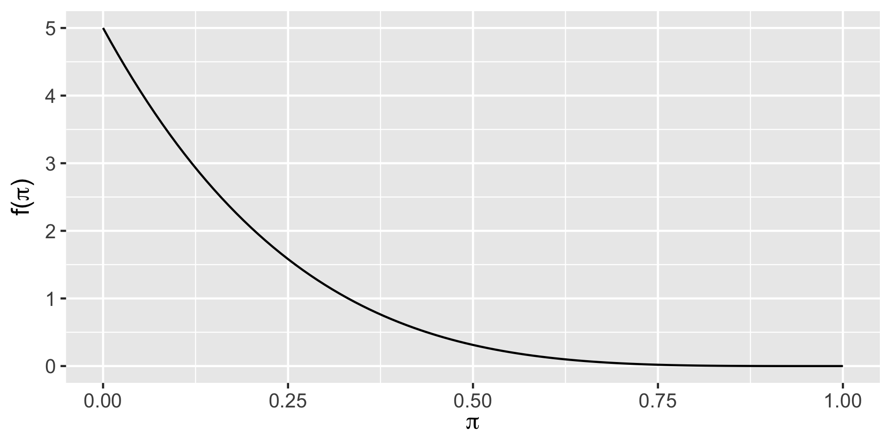Jared’s prior
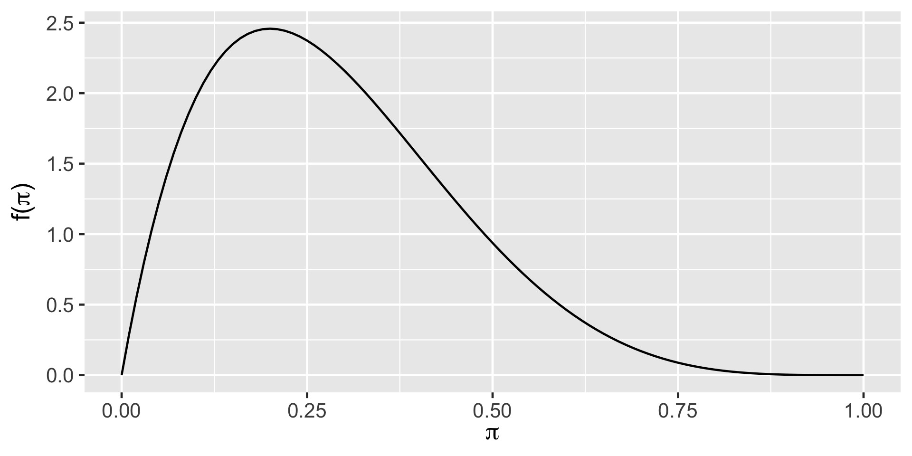Erin’s prior
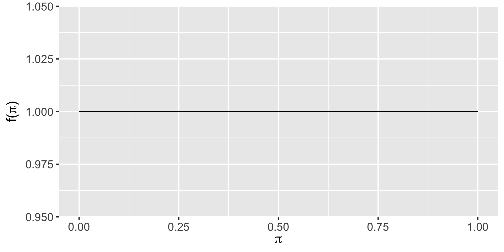Xuan’s prior
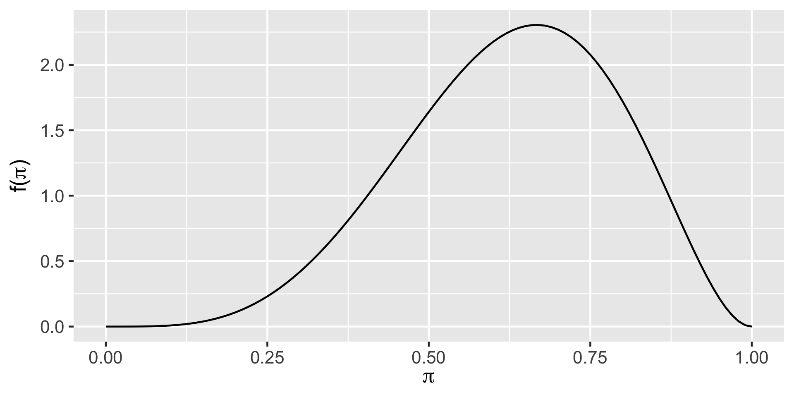Beyoncé’s prior
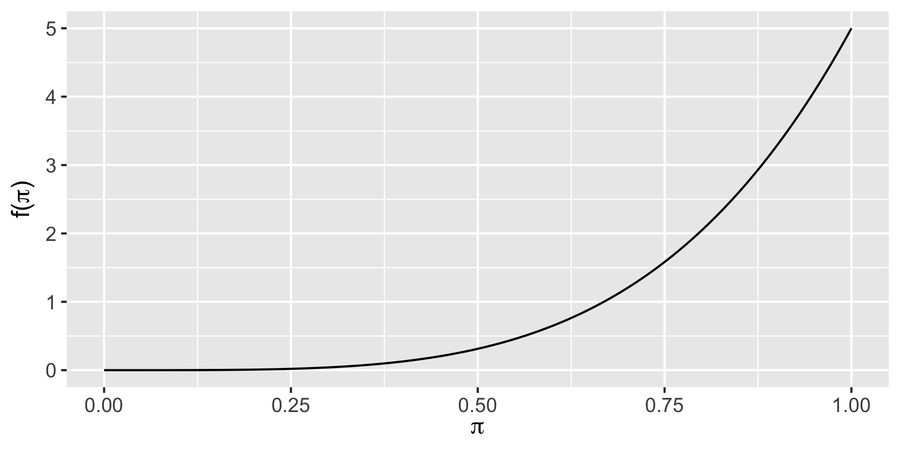Beta Prior model
Let \(\pi\) be a random variable which can take any value between 0 and 1, ie. \(\pi \in [0,1]\). Then the variability in \(\pi\) might be well modeled by a Beta model with shape parameters \(\alpha > 0\) and \(\beta > 0\):
\[\pi \sim \text{Beta}(\alpha, \beta)\]
The Beta model is specified by continuous pdf \[\begin{equation} f(\pi) = \frac{\Gamma(\alpha + \beta)}{\Gamma(\alpha)\Gamma(\beta)} \pi^{\alpha-1} (1-\pi)^{\beta-1} \;\; \text{ for } \pi \in [0,1] \end{equation}\] where \(\Gamma(z) = \int_0^\infty y^{z-1}e^{-y}dy\) and \(\Gamma(z + 1) = z \Gamma(z)\). Fun fact: when \(z\) is a positive integer, then \(\Gamma(z)\) simplifies to \(\Gamma(z) = (z-1)!\).
Beta Prior model
\(\pi \sim \text{Beta}(3, 8)\)
\(f(\pi) = \frac{\Gamma(\alpha + \beta)}{\Gamma(\alpha)\Gamma(\beta)} \pi^{\alpha-1} (1-\pi)^{\beta-1}\)
\(f(0.5) = \frac{\Gamma(3 + 8)}{\Gamma(3)\Gamma(8)} 0.5^{3-1} (1-0.5)^{8-1}\)
\(f(0.5) = \frac{10!}{2!7!} 0.5^{3-1} (1-0.5)^{8-1}\)
\(f(0.5) = 0.703125\)
Beta Prior model
\(\pi \sim \text{Beta}(3, 8)\)
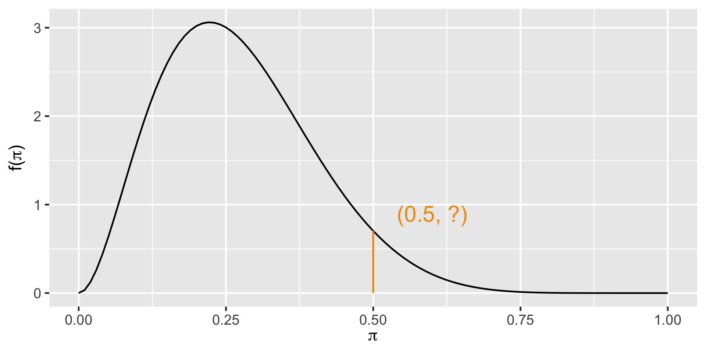
Plotting Beta Prior
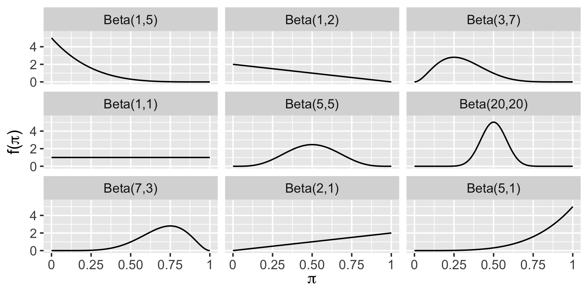Plotting Beta Prior with bayesrules package
Use the plot_beta() function in the bayesrules package to try different shape parameters. Example:
Beta Descriptives
\[E(\pi) = \frac{\alpha}{\alpha + \beta}\]
\[\text{Mode}(\pi) = \frac{\alpha - 1}{\alpha + \beta - 2}\]
\[\text{Var}(\pi) = \frac{\alpha \beta}{(\alpha + \beta)^2(\alpha + \beta + 1)}\]
Beta Descriptives with bayesrules package
Use the summarize_beta() function in the bayesrules package to find the mean, mode, and variance of various Beta distributions. Example:
The Beta-Binomial Model
The notes for this lecture are derived from Chapter 3 of the Bayes Rules! book
Bike ownership
The transportation office at our school wants to know \(\pi\) the proportion of people who own bikes on campus so that they can build bike racks accordingly. The staff at the office think that the \(\pi\) is more likely to be somewhere 0.05 to 0.25. The plot below shows their prior distribution. Write out a reasonable \(f(\pi)\). Calculate the prior expected value, mode, and variance.
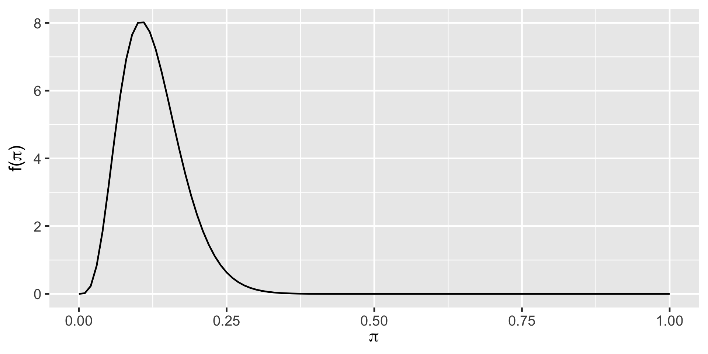Summarizing the prior
Posterior for the Beta-Binomial Model
Let \(\pi \sim \text{Beta}(\alpha, \beta)\) and \(Y|n \sim \text{Bin}(n,\pi)\).
\(f(\pi|y) \propto \frac{\Gamma(\alpha+\beta)}{\Gamma(\alpha)\Gamma(\beta)}\pi^{\alpha-1} (1-\pi)^{\beta-1} {n \choose y}\pi^y(1-\pi)^{n-y}\)
\(f(\pi|y) \propto \pi^{(\alpha+y)-1} (1-\pi)^{(\beta+n-y)-1}\)
\(\pi|y \sim \text{Beta}(\alpha +y, \beta+n-y)\)
\(f(\pi|y) = \frac{\Gamma(\alpha+\beta+n)}{\Gamma(\alpha+y)\Gamma(\beta+n-y)} \pi^{(\alpha+y)-1} (1-\pi)^{(\beta+n-y)-1}\)
Conjugate prior
We say that \(f(\pi)\) is a conjugate prior for \(L(\pi|y)\) if the posterior, \(f(\pi|y) \propto f(\pi)L(\pi|y)\), is from the same model family as the prior.
Thus, Beta distribution is a conjugate prior for the Binomial likelihood model since the posterior also follows a Beta distribution.
Bike ownership posterior
The transportation office decides to collect some data and samples 50 people on campus and asks them whether they own a bike or not. It turns out that 25 of them do! What is the posterior distribution of \(\pi\) after having observed this data?
\(\pi|y \sim \text{Beta}(\alpha +y, \beta+n-y)\)
\(\pi|y \sim \text{Beta}(5 +25, 35+50-25)\)
\(\pi|y \sim \text{Beta}(30, 60)\)
Plotting the posterior
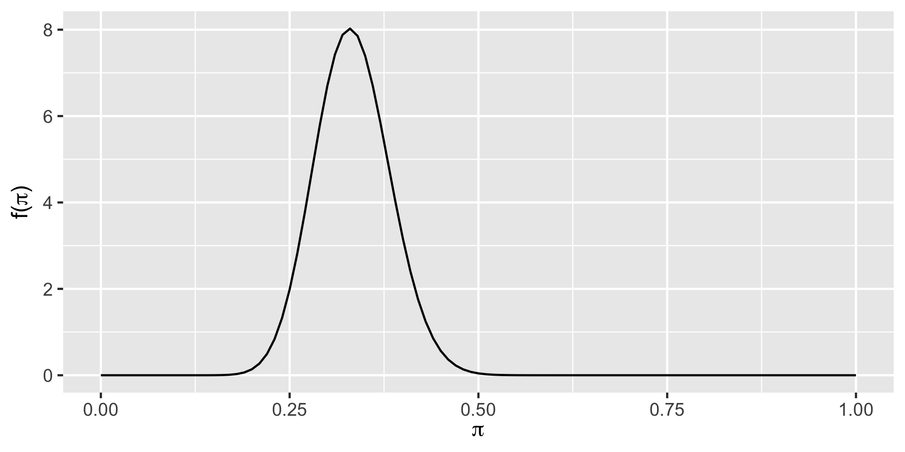Summarizing the posterior
Plot summary
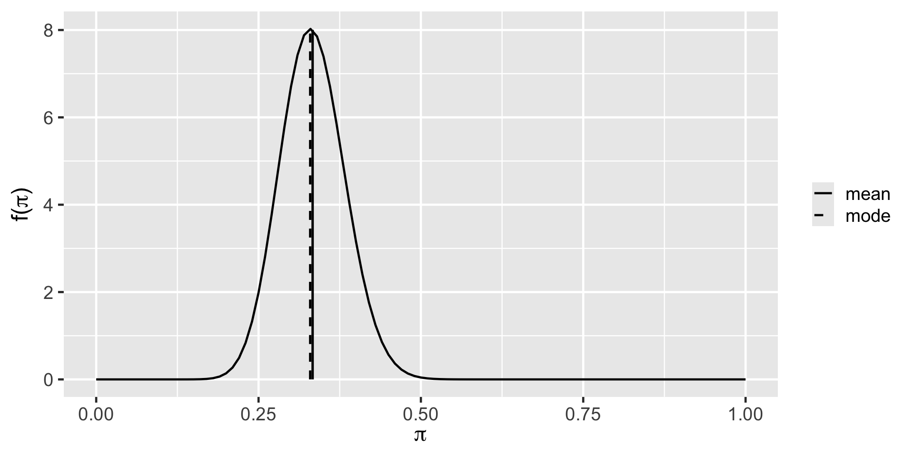Bike ownership: balancing act
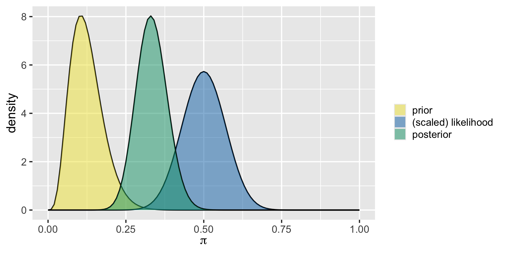Posterior Descriptives
\(\pi|(Y=y) \sim \text{Beta}(\alpha+y, \beta+n-y)\)
\[E(\pi | (Y=y)) = \frac{\alpha + y}{\alpha + \beta + n}\] \[\text{Mode}(\pi | (Y=y)) = \frac{\alpha + y - 1}{\alpha + \beta + n - 2} \] \[\text{Var}(\pi | (Y=y)) = \frac{(\alpha + y)(\beta + n - y)}{(\alpha + \beta + n)^2(\alpha + \beta + n + 1)}\\\]
Bike ownership - descriptives of the posterior
What is the descriptive measures (expected value, mode, and variance) of the posterior distribution for the bike ownership example?
Simulating the Beta-Binomial Model
Data Context
Let \(\pi\) represent the proportion of voters that support Michelle in the upcoming election.
Prior
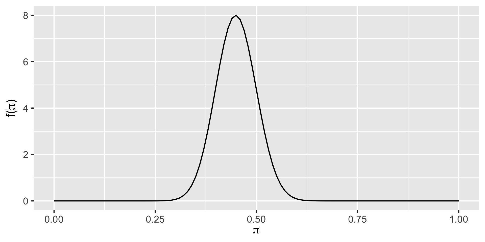Data and the Posterior
pi y
1 0.4884391 23
2 0.4430527 14
3 0.4953429 35
4 0.4633678 29
5 0.4963052 36
6 0.5495968 26 pi y
9995 0.4741776 24
9996 0.3756744 13
9997 0.4660905 25
9998 0.4791408 21
9999 0.4394663 24
10000 0.4229081 21\(f(\pi|y =30)\)
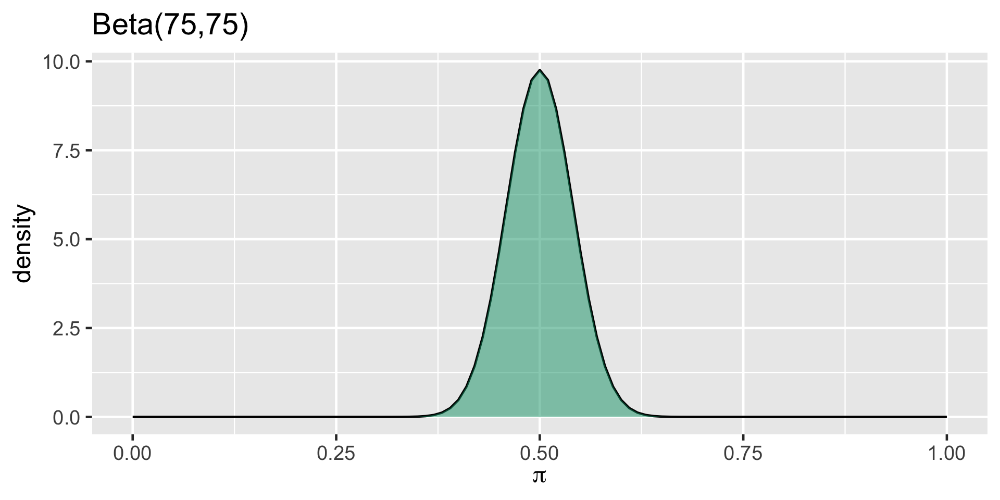
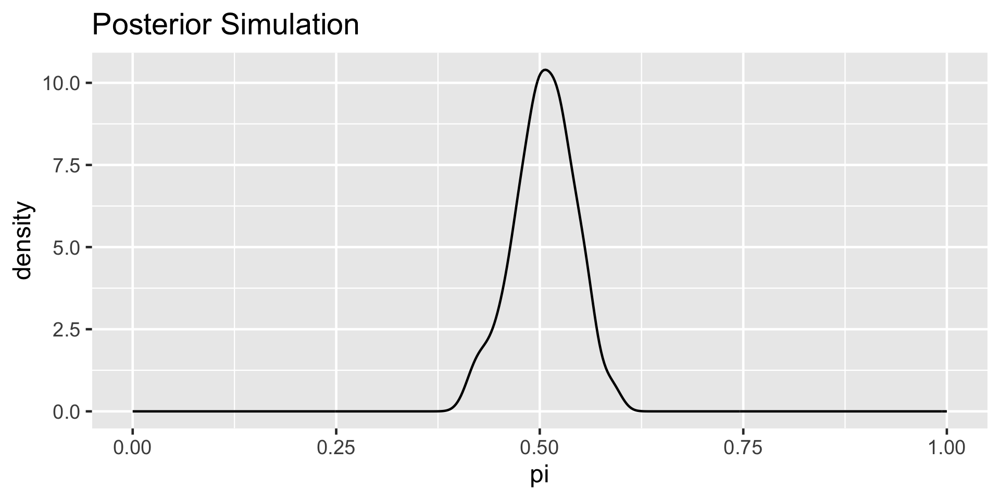